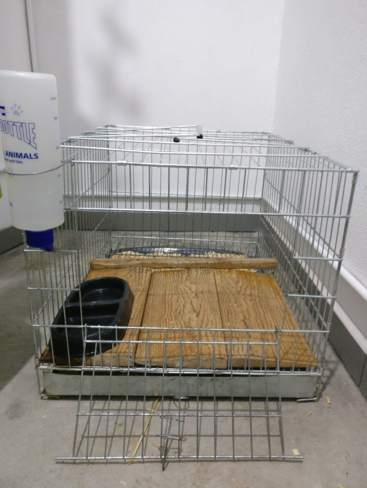
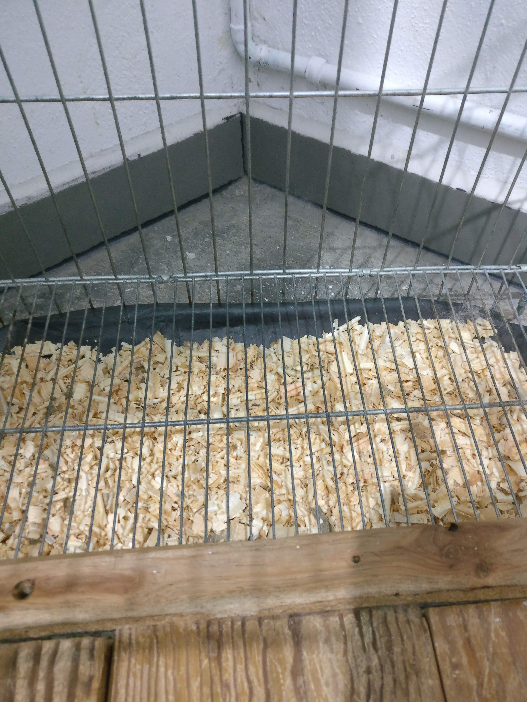
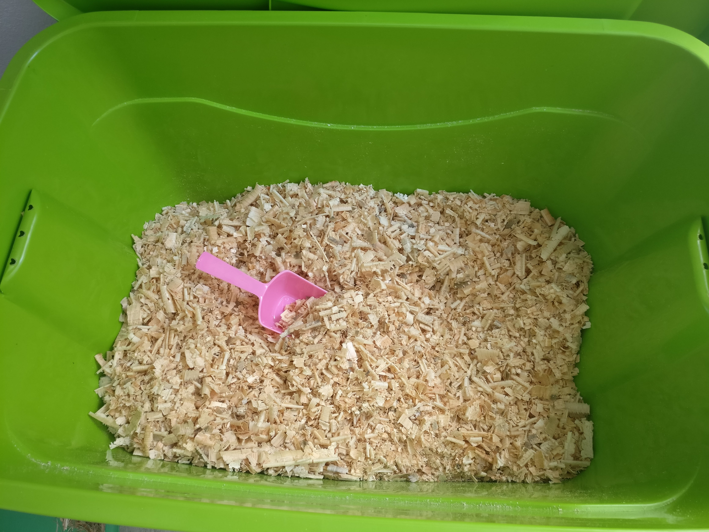
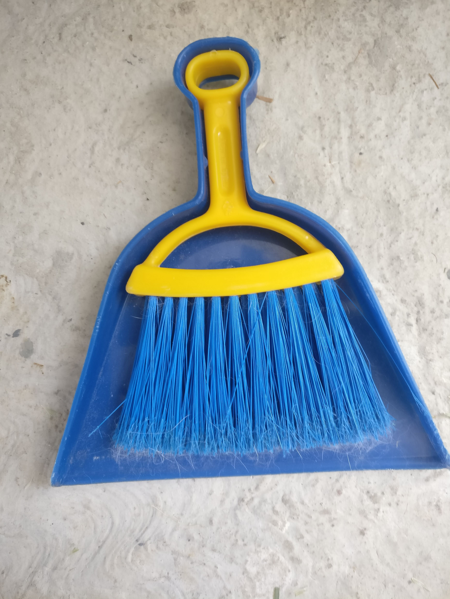
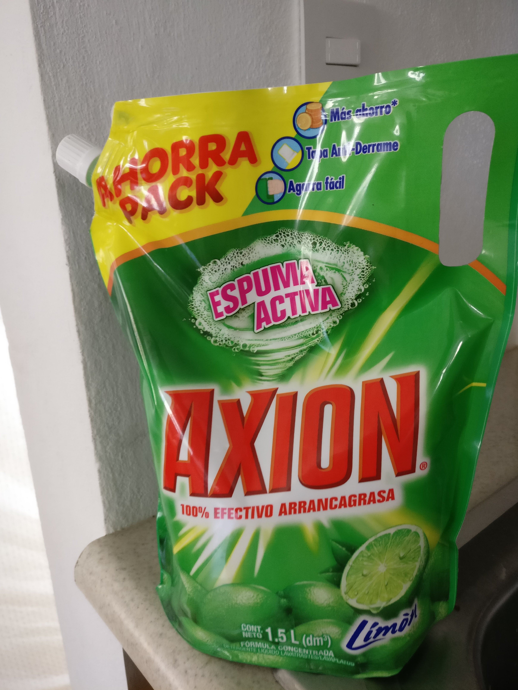
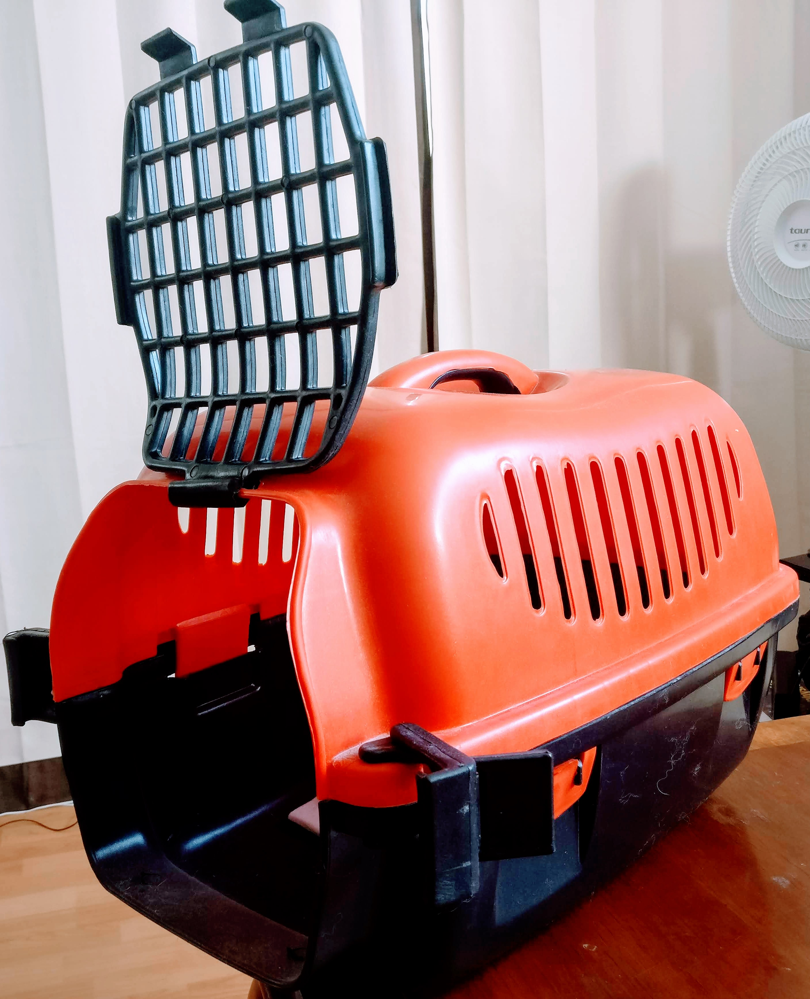
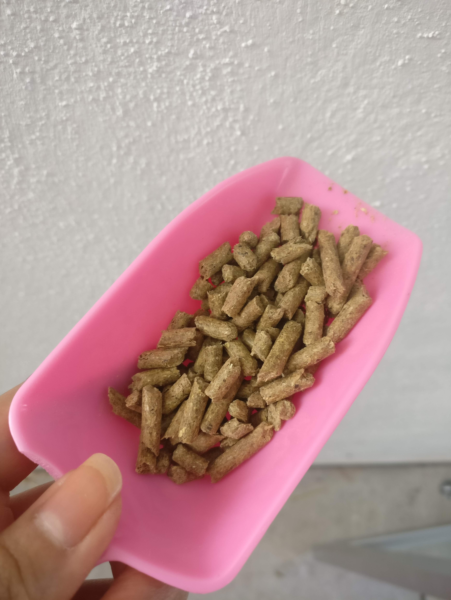

La Casa de Valentina

Holi, les doy la bienvenida a mi casita 🐰🏠
Como podrán ver la casita de valentina es una jaulita de 60x45 cm, tiene una bandeja en la parte de abajo donde cae toda la 💩 💩 💩, la bandeja se desliza hacia enfrente para sacarse a la hora de hacer la limpieza. Tiene una reja como piso por lo que mi papá me ayudó a cortar los pedazos de madera que se ven en la foto para que no se le lastimaran sus patitas al entrar a su casa, además como duerme allí se puede acostar cómodamente sobre su piso de madera.

Al fondo de su casita no tiene estas maderas ya que allí esta su baño en el que a través de la reja cae la 💩 hacia la bandeja que esta cubierta con la mitad de una bolsa de basura y sobre esta bolsa le pongo sustrato para que absorba la pipi.

Durante el día su casita permanece abierta para que puede entrar y salir a su antojo, también pueden ver que tiene su platito y su bebedero el cual siempre tiene agua limpia y fresca para que este bien hidratada y su comida
Cómo limpio su casita y qué utilizo
Para limpiar su casita empiezo retirando la bandeja para quitar la bolsa con el sustrato sucio, uso la bolsa para que a la hora de limpiar sea más fácil y rápido, además previene que la bandeja se manche de pipí. Una vez que ya saque la bolsa la pongo en otra bolsa y la cierro para que la pipi no se escurra.
Después retiro las maderas, su plato y su bebedero para lavar la jaula con jabón y agua, también lavo la bandeja, las maderas (con un trapo y poca agua) , su plato y su bebedero, enjuago todo con agua asegurándome de retirar todo el jabón y la dejo secar.
Una vez que se secó todo vuelvo a ensamblar la casita , el piso de madera, la bandeja ya preparada con la bolsa y el sustrato nuevo y por último le pongo su bebedero y su platito. Abajo les dejo la foto de la palita recogedora que uso, este me gusta mucho porque ataja todos sus pelitos y para tallar la jaula es genial, también les muestro con que jabón lavo todo 👇


Accesorios
Les dejo los links de la mayoría de los accesorios en el nombre de cada cosa por si gustan adquirirlos



Colchita

Palita para alimento

Si les gustó conocer la casita de Valentina compártanlo con sus amigos en sus redes sociales y si tienen alguna duda comenten, prometo responder a la brevedad.
Mis Herramientas de trabajo
Laptop: Acer Aspire R15 Convertible
Cámara: Nikon D5300
Celular: Oneplus 3T